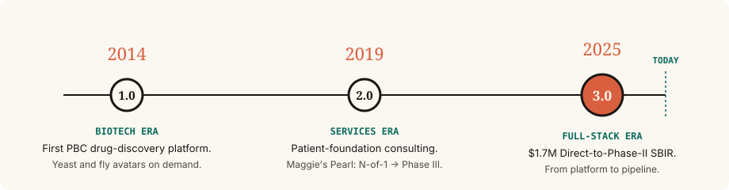

Perlara was founded in 2014 to translate yeast and fruit-fly biology into treatments for ultra-rare diseases. Twelve years later, the model has matured through two prior eras — a biotech, then a patient-services firm — into a full-stack drug development company.

Founded as the first Public Benefit Corporation in drug discovery. Built yeast and fly disease avatars for ultra-rare families on a pay-to-play basis, with Cure Partnerships as the engagement model.
Pivoted to a patient-first consulting model. Shepherded parent-initiated studies, including the N-of-1 epalrestat program for PMM2-CDG that became Maggie’s Pearl — a family-funded program that reached Phase III in three years for under $5M.
Established a fully-remote wet lab for yeast-based drug repurposing. Screened FOXG1, SURF1, ECHS1, DHDDS, NARS1, PIGW, PIGN, ADSL, ALG11 and others in partnership with disease foundations.
November 2025: NIH NCATS awarded a Direct-to-Phase-II SBIR to scale the yeast-avatar engine across ETC Complexes I–V, formally marking the transition from services to full-stack drug development.
37 humanized yeast models. 8,384 compounds profiled. A growing pipeline of repurposed therapies moving into patient-cell validation and IND-enabling studies — each anchored by a family, a foundation, and a specific mechanism.
From day one in 2014, yeast has been the primary disease model. The library and the assays have grown; the organism hasn’t.
Public Benefit Corporation since incorporation. The 1.0 platform, the 2.0 services, and the 3.0 pipeline all share the same legal commitment to patient outcomes.
Every program begins with a specific patient or family. Cure Partnerships in 1.0, Cure Odysseys in 2.0/3.0 — the name evolved, the contract didn’t.
From the original Perlara blog to the Cure Odysseys Substack today, the science has been narrated in the open. What we learn, families learn — usually in the same week.
CEO and founder of Perlara PBC. Trained as a chemical biologist at Harvard and Princeton. Has championed yeast-based personalized medicine for over a decade — first through Perlara 1.0’s Cure Partnerships, then as a consulting geneticist for rare- disease families, and now as the principal investigator on the Perlara 3.0 SBIR.